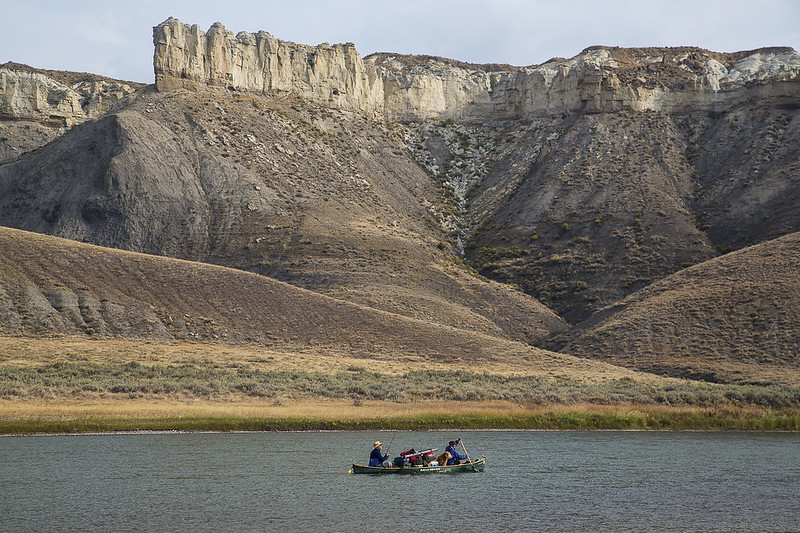

After the raccoon left from it's home, the raccoon was walking around the plains to see mountains and rivers. The raccoon wondered if its friends were there. the Raccoon searched immediately.
My character doesn’t do any folk song and dance. Its makes a growling sound and it starts screaming while it escapes. Also, it can hear the sound of the forest with the other animals. You just hear the Raccoons breath, but it is my own character.
